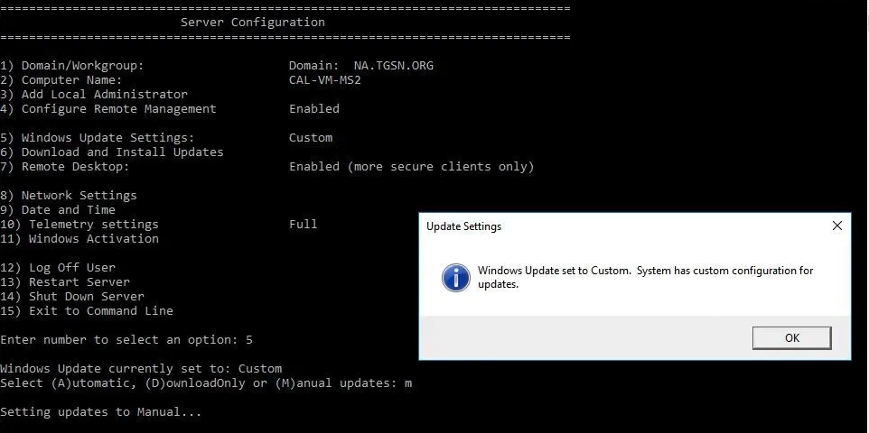

Windows Server#
Toutes les information provienne de ce site : https://www.urtech.ca/2019/06/solved-how-to-set-windows-updates-to-manual-on-windows-server-2019-2016-2012r2/. Traduit avec www.DeepL.com/Translator (version gratuite).
How To Set Windows Updates to Manual on Windows Server#
Windows Server 2019, 2016, 2012R2 règle par défaut les mises à jour de Windows sur TÉLÉCHARGER ET INSTALLER et il n’existe aucun moyen évident de modifier ces paramètres. Voici deux façons simples de configurer Windows Update comme bon vous semble :
1 - SCONFIG
Ouvrez un CMD en tant qu’administrateur.
Tapez SCONFIG et appuyez sur ENTER
Tapez 5 et appuyez sur ENTER
Tapez M pour Manual (ou D pour Download Only) et appuyez sur ENTER.
Si SCONFIG indique toujours que WINDOWS UPDATES est réglé sur CUSTOM, passez à la méthode suivante :
{kind=link}
2 – LOCAL SECURITY POLICY or GROUP POLICY
Cliquez sur START et tapez GPEDIT.MSC et appuyez sur ENTER (ou ouvrez la CONSOLE DE GESTION DES POLITIQUES DE GROUPE et ouvrez une GPO existante ou démarrez-en une nouvelle)
Développez CONFIGURATION ORDINATEUR > OUTILS ADMINISTRATIFS > COMPOSANTS FENÊTRES > MISE À JOUR FENÊTRES.
Double-cliquez sur CONFIGURER LES MISES À JOUR AUTOMATIQUES.
Sélectionnez soit DISABLED (équivalent de MANUAL) soit ENABLED et sélectionnez ce que vous souhaitez dans la liste déroulante.
{kind=link}